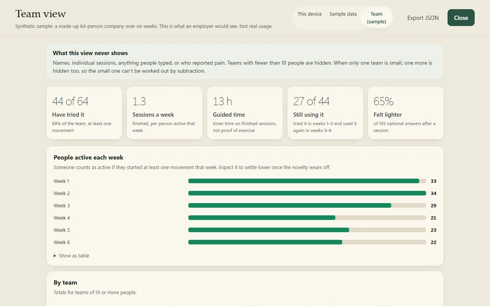

Show leadership it's working. Without showing them anyone.
Lull gives people who sit all day a three-minute guided movement break: they type how they feel, get one short session, and it adjusts or stops as they go. HR sees team totals only, never a person.
How are you feeling right now?
Demo with preset answers; no AI running
Tap one to see both sides: what your employee gets, and what HR sees.
What your employee sees
"Too easy" or "too much" changes the next movement. Mention pain and it stops.
What HR sees
No names. No messages. No individual sessions.Teams under 10 people are hidden.
Sample data · a made-up company
Why it's different
Built for the three reasons wellbeing tools get cut.
Can't prove it works
Team-level adoption you can show leadership
Usage dies after week one
One short session at a time, no app to master
Tracking feels like surveillance
HR never sees an individual

The pilot and the cost
6 weeks. Targets agreed before day one.
One team of 10–50 people. If the targets aren't met, the week 6 report will say so plainly.
How the six weeks run
- Week 0Pick one team of 10–50 people. 15-minute kick-off. Share a link.
- Weeks 1–3People use it whenever they want, as often as they like.
- Week 3Check-in on the team totals. Adjust anything that isn't working.
- Weeks 4–6Short interviews with up to 5 volunteers. Final report in week 6.
How we'll judge it Proposed, agreed with you first
| Question | Measure | Target |
|---|---|---|
| Do people try it? | Share of the team who start at least one session in the first two weeks | At least half |
| Do they come back? | Of people who finish one session, how many use it again within a week | At least 1 in 3 |
| Is it worth their time? | Answers to the optional "How did that feel?" question | More "Lighter" than "Not for me" |
| Is it safe? | Every report of pain or symptoms ends the session without offering more movement | Every time, no exceptions |
What we need from you
- One team and one contact person.
- A 15-minute kick-off and a 30-minute check-in at week 3.
- Help finding up to 5 volunteers for 20-minute interviews.
Questions you'll ask
Before you take it to your founder
What if nobody uses it?
Then you'll know by week 3, not at renewal. The targets (at least half the team tries it, at least 1 in 3 comes back within a week) are agreed with you before we start, we check the team totals together at week 3 and adjust anything that isn't working, and if the targets aren't met, the week 6 report will say so plainly.
Can HR see what someone typed?
No. You see totals, never a person: no names, no individual sessions, nothing anyone typed. Teams under 10 people are never shown. Who reported pain is never shared with anyone, and people can switch off the activity log at any time.
Is this therapy or a mental-health service?
No. Lull offers guided movement sessions of 2½ to 4 minutes: mobility, stretching and low-impact movement that works at a desk, in the browser, with nothing to install. It is not medical advice. If someone mentions pain, dizziness or injury, the session stops and points them to proper help.
What happens in the pilot?
Week 0: pick one team of 10–50 people, a 15-minute kick-off, share a link. Weeks 1–3: people use it whenever they want. Week 3: a check-in on the team totals. Weeks 4–6: short interviews with up to 5 volunteers, then a plain written report: what worked, what didn't, and whether to continue.
From the builder
I built Lull because people who sit all day know they should move more; what stops them is deciding what to do with five spare minutes. It's a working product at pilot stage, not a finished platform. I'm looking for 3 pilot partners to shape what it becomes, and to tell me plainly where it falls short.
Rupak Ghanpathi, builder of Lull · github.com/RUPAK30
We're looking for 3 pilot partners.
Next step is a 20-minute call to choose the team and agree the targets. Not ready for a pilot? Fifteen minutes of honest feedback helps just as much.
or email rupakr2g@gmail.com